Analysis Date: 2025-10-03 15:26
Data Period: 2023-09-01 to 2023-09-01
Factors Resolved: 3
Models Run: 2
Purpose: Quantify how well the PMF model reconstructs measured concentrations (closure) and identify species where regularization affects fit quality.
Files: See MMF9_mmf_20230901_20230901_closure_summary.csv for detailed per-species metrics.
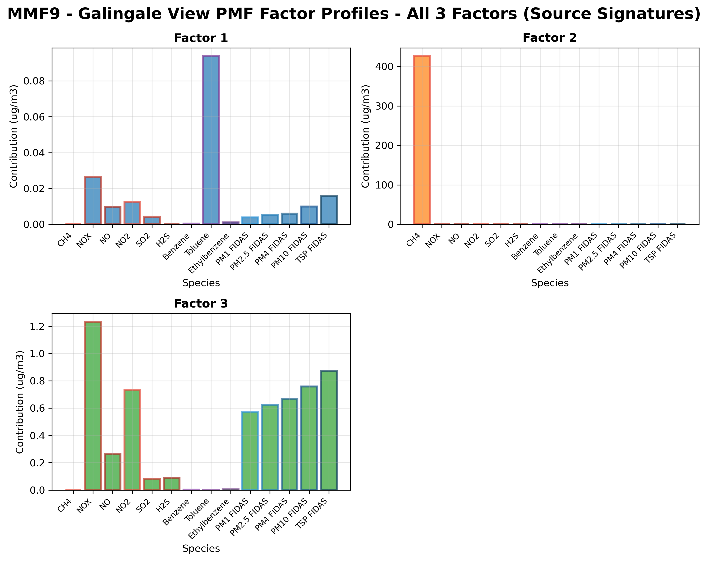
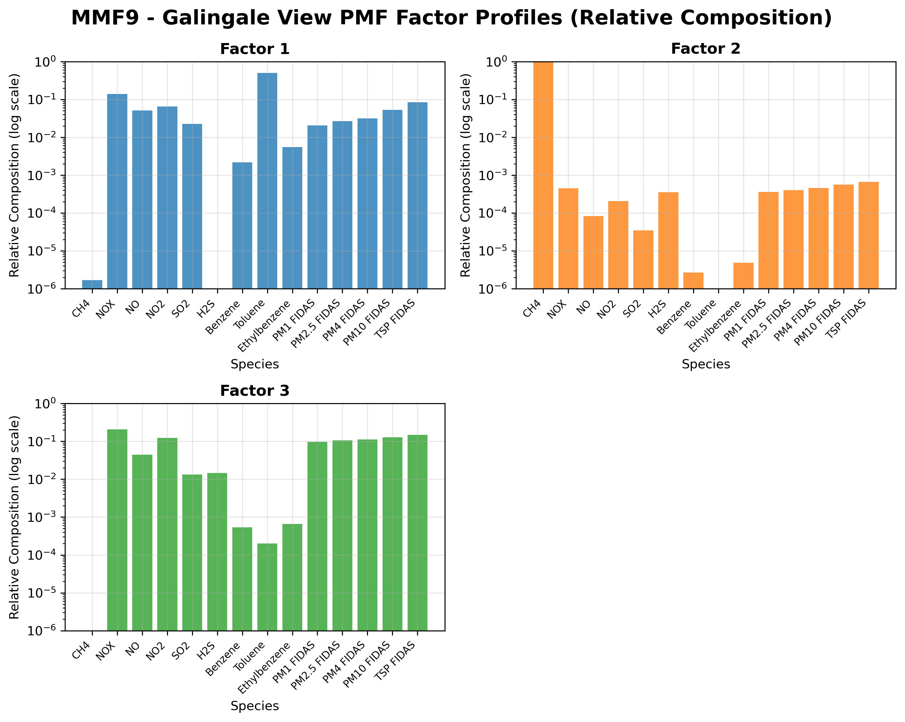
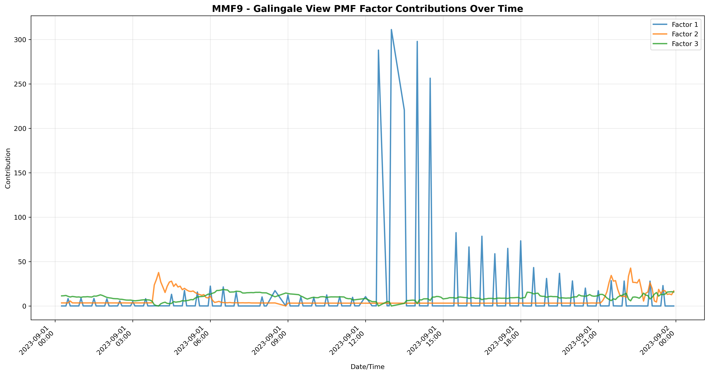
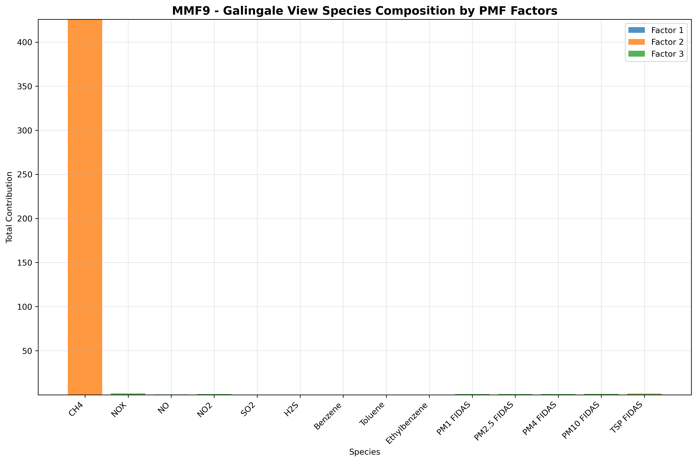
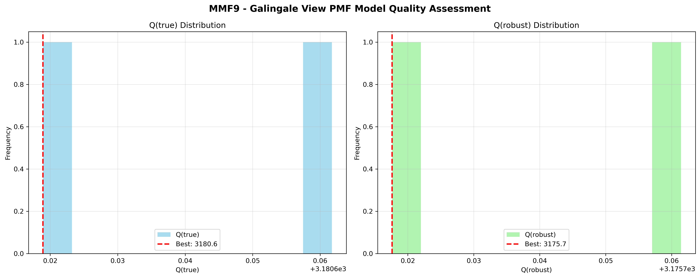
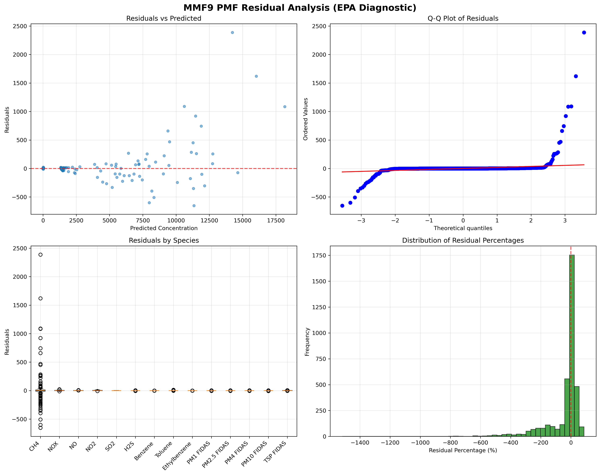
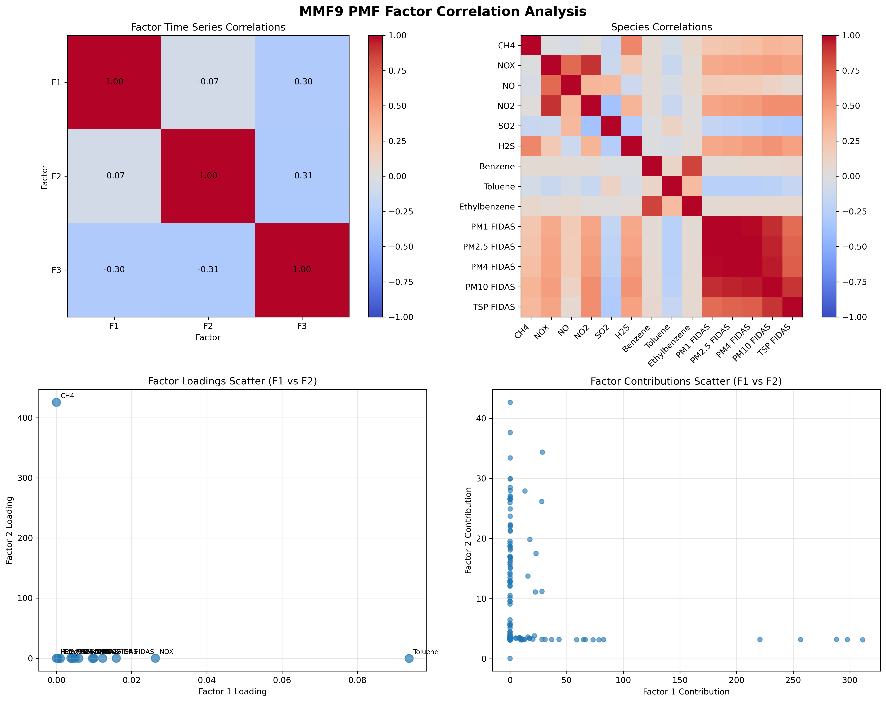
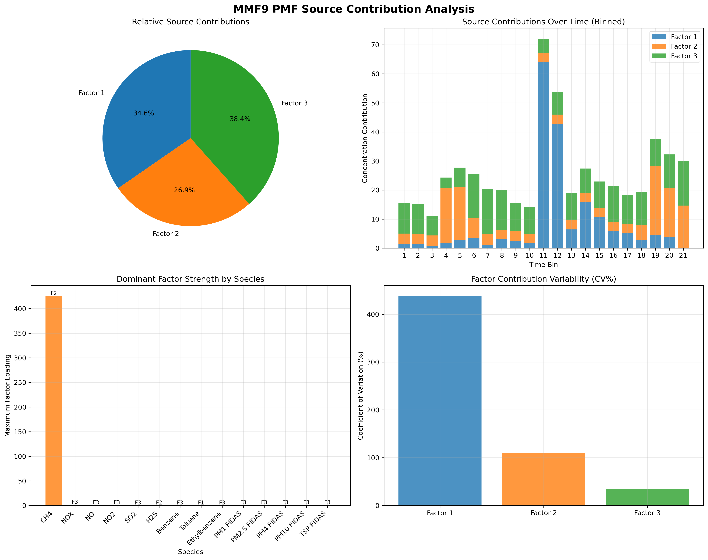
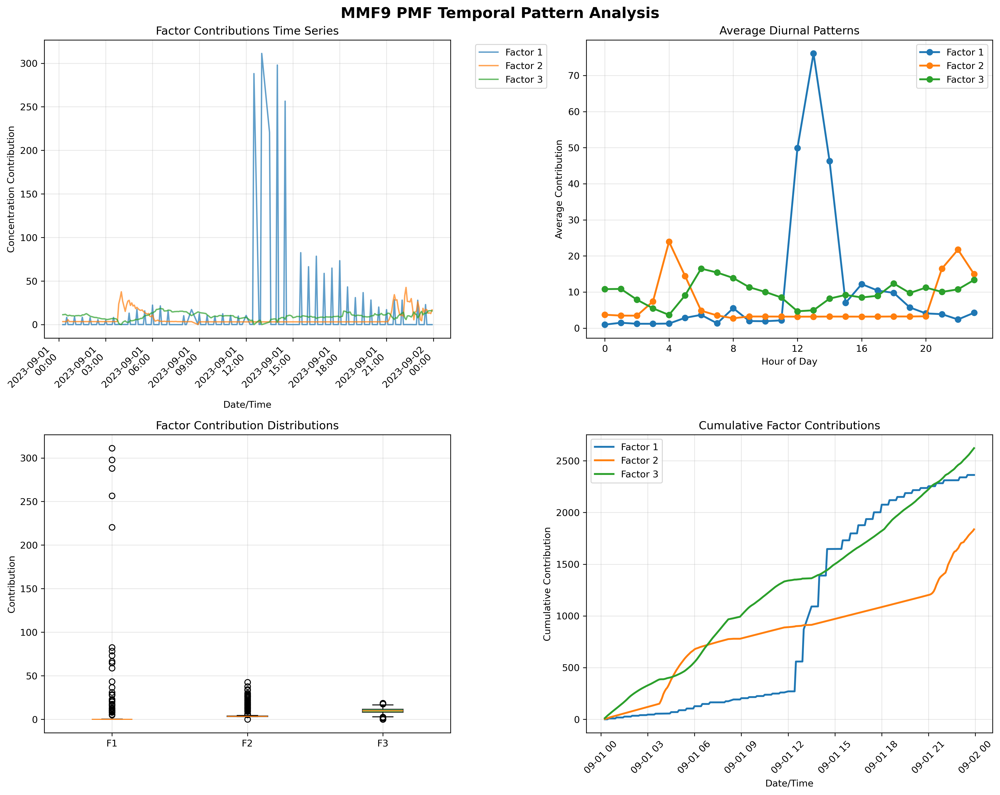
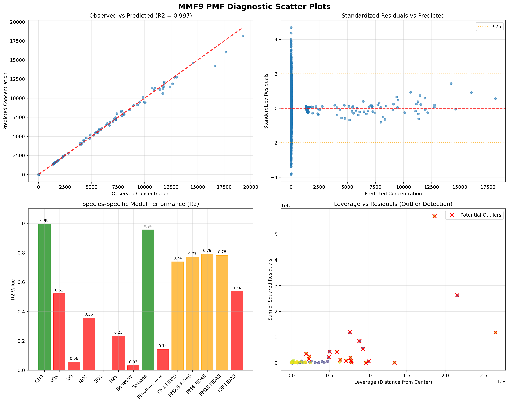
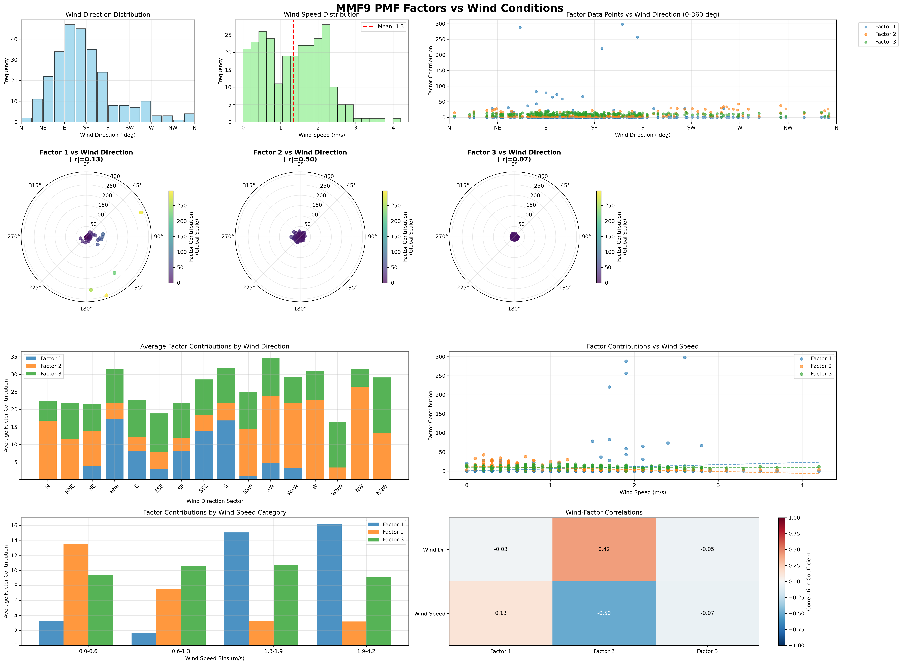
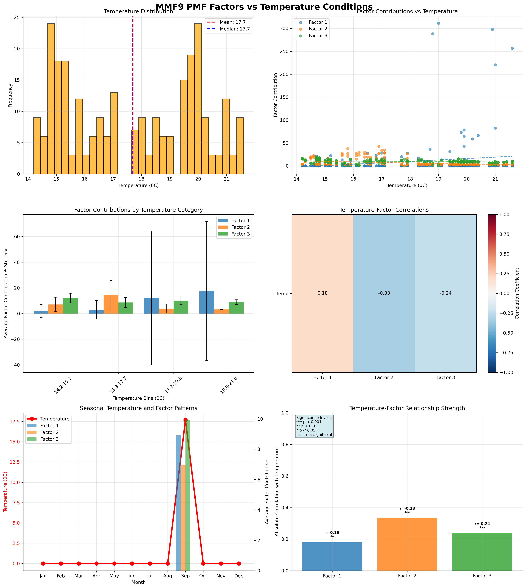
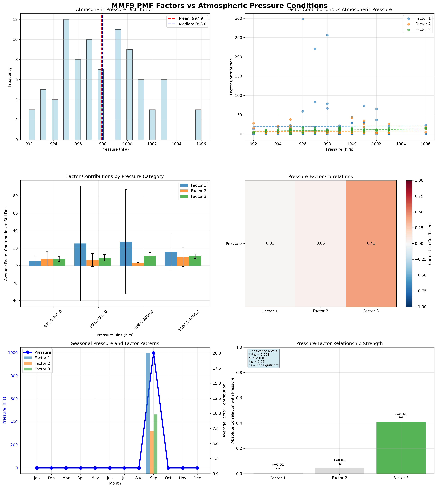
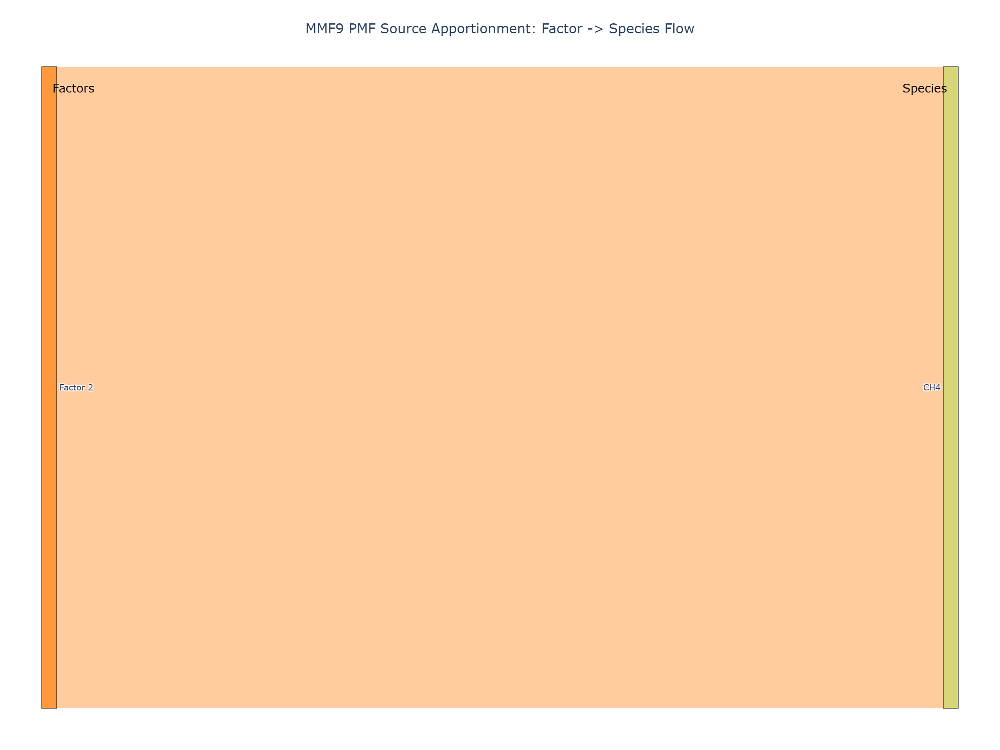
Command to reproduce this analysis:
python pmf_source_app.py \
MMF9 \
--start-date 2023-09-01 \
--end-date 2023-09-01 \
--factors 3 \
--models 2 \
--output-dir "test_datetime_fix" \
--write-diagnostics
| Parameter | Value | Description |
|---|---|---|
| --uncertainty-mode | legacy | Uncertainty calculation method |
| --method | ls-nmf | ESAT NMF algorithm (ls-nmf or ws-nmf) |
| --init-method | column_mean | Matrix initialization method |
| --init-norm | True | Normalize data before kmeans initialization |
| --hold-h | False | Hold H (profile) matrix constant during training |
| --delay-h | -1 | Hold H matrix for N iterations (-1 = disabled) |
| --snr-enable | False | EPA S/N-based feature categorization |
| --robust-fit | False | Use robust loss during SA training (fallback only) |
| --robust-alpha | 4.0 | Robust cutoff alpha for scaled residuals |
| --snr-weak-threshold | 2.0 | S/N threshold for weak species |
| --snr-bad-threshold | 0.2 | S/N threshold for bad species |
| --exclude-bad | True | Exclude bad species from analysis |
| --seed | 42 | Random seed for reproducibility |
| --write-diagnostics | True | Write diagnostic CSV files |
Generated on 2025-10-03 15:26:21